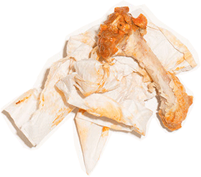

Before dawn on March Madness Sweet 16 game day, a semitrailer trundles up to an unmarked door in a strip mall in Germantown, Wis. Two men unload the prized cargo: 2,250 pounds of chicken wings and 69 gallons of sauce. Seventeen hours later, with the Wisconsin Badgers fighting from behind against the North Carolina Tar Heels, the wings are flying from a storage room cooled to 28F into a cramped kitchen where a dozen cooks jostle amid shouted orders, sizzling grease, and the occasional shrieks of an alarm urging them to move faster. Monitors overhead flash orders from the 20 waiters and bartenders working tonight at Buffalo Wild Wings.
Kyle Turner, a husky prep cook in a black-and-yellow Wild Wings T-shirt and cap, dumps six freshly fried wings into a plastic pail labeled Parmesan Garlic. He pivots right, pumps an ounce of sauce into the pail, slaps on a lid, swivels left, shakes the pail with both hands, sets the lid aside, and then drops the wings into a cardboard carton. It takes six seconds. Next to Turner, fellow “shaker” Brian Glover spins a pail marked Asian Zing with one hand, no top on the pail. “The top slows me down,” he says.
The sauced wings are piled onto a tray alongside celery, dressings, and fried cheese curds. Eight minutes after the order came in, waitress Alyssa Kark carries it out into a sea of cheering Badger fans. Kark squeezes past the two-deep throng at the bar and sets her tray before three Wisconsinites gazing up at a television nearly as big as a garage door. “Awesome,” says Jesse Povlich, a machine-shop manager in red-and-white Badgers shirt. “We’re going to win,” he says, biting into his first wing.
Povlich was correct. Wisconsin beat North Carolina, then knocked off the undefeated University of Kentucky in an epic Final Four game, earning a title shot against Duke in Monday night’s championship. But the biggest winner might be Buffalo Wild Wings, whose “Wings Beer Sports” motto has been a recipe for victory in the restaurant industry. The Minneapolis-based chain has grown from about 300 U.S. locations to more than 1,000 in the past decade, with sales and stock price that are the envy of Olive Garden, Outback Steakhouse, and other rivals. Profits last year rose 31 percent and the stock has jumped by 45 percent since mid-October.
The casual-dining industry, characterized by table service and moderate prices, scraped out sales growth of 2 percent last year, according to NPD Group. Sales at Buffalo Wild Wings’ company-owned and franchised stores grew about 6 percent. Even after raising prices last fall to offset the surging cost of chicken wings, sales were up more than 11 percent in January. On a single day in February—Super Bowl Sunday—its customers gobbled up 11 million wings.
B-Dubs, as regulars have nicknamed the chain, plans to add another 90 stores this year. Chief Executive Officer Sally Smith says she thinks there’s room for an additional 600 in North America, especially on the coasts. The company has more than 20 outlets in Canada, Mexico, and the Philippines and plans to keep expanding abroad. Last year it bought stakes in emerging fast-casual chains PizzaRev and Rusty Taco, which Smith describes as “little bets” for when the Buffalo Wild Wings expansion tapers off at home.
Wild Wings restaurants won’t make any Michelin list. Wings are about $1 apiece and available in an almost comical number of varieties: boneless or boned, with five dry seasonings and 17 sauces with names like Jammin' Jalapeño and Thai Curry arrayed on a heat scale. The rest of the menu is sports-bar standard—nachos, mozzarella sticks, burgers—and the beer list isn’t terribly adventurous. Most people don’t need to leave home to watch their favorite team on a state-of-the-art TV. But the chain appeals to customers across a wide band, from pub-loving sports nuts to families looking for a cheap night out. Revenue was $1.5 billion last year.
The formula is evident in the company's newest restaurants, which have been rolled out across the country over the past two years. The high ceilings and blonde finishes upend the dank-and-dark stereotype of the sports bar. At the Germantown location, the mixed crowd is spread across several barrier-free zones: Customers in Badger garb gravitate to the high-top tables dotting the floor around the bar; families with young children stick to the carpeted areas with booths. At least five of the 53 TVs are visible from any seat.
There are trivia games and wing-eating contests for adults, video games on tablets for kids. “We consider ourselves to have 1,100 stadiums,” says Ben Nelsen, vice president for guest experience and innovation. “We want to have a piece not only of that food dollar but that entertainment dollar.”
Kitchen employees; Fryers in the kitchen; Sauce buckets used to sauce wings; Boneless wings fresh out of the fryer in the kitchen.
Photographs by Ryan Lowry for Bloomberg Businessweek
Smith, an accountant who’s partial to spicy garlic wings, has run Buffalo Wild Wings for almost 20 years. She says when she and her chief financial officer, Mary Twinem, pitched the company’s initial public offering in 2003, investors kept asking, “How can two women run a sports bar-and-grill?”
During a tour of a new location in Edina, Minn., near the company headquarters, Smith explains how the buffalo logo laser-etched onto the company’s “nucleated” glasses help sustain a foamy beer head. She tells a manager it’s time to consider using IV-style bags to get sauce into the shaking pails. She explains how her research into competing chains made her decide that none of her restaurants would pay more than 13.1 percent of revenue for rent and depreciation.
The company started in 1982 with one restaurant in Columbus, Ohio. When Smith joined as CFO in 1994, Wild Wings had about 30 locations, no financial statements, and no computers. “We hired someone to do payroll because she had a typewriter,” she says. The company did most of its own shipping. “If we wanted to open a new store, we had to decide whether to buy a new truck.” A man hired as CEO in 1996 never showed up for work. “One of the directors said, ‘I guess you’re going to have to do it,’ ” Smith recalls.
As she cleaned up the books and ditched the shipping operation, Smith often wondered what she’d gotten herself into. “But I knew there was something there,” she says. Buffalo wings were still a menu novelty. “I’d talk to guests, and they’d say they’re coming in three or four times a week for the wings.” College students wrote to ask when a Wild Wings would open near their campus.
The restaurants focused on sports as younger clientele came to watch cable and satellite channels they couldn't afford at home. “Somebody from Ohio State would say, ‘Would you put on the game?’ ” Smith says. Wild Sings became an early adopter of flatscreens and high-definition TV. By the time its first national ad ran on ESPN in 2006, the chain had 400-plus locations and was adding 50 to 60 a year.
Then the recession hit, pushing most casual-dining restaurants into a slump from which few have emerged with any real vigor. The sit-down operations couldn’t compete with McDonald’s and Burger King on price, and a rising breed of fast-casual alternatives such as Chipotle and Panera Bread lured away millennials with fresh dishes, lower prices, and speedier service. Yet Wild Wings’ growth actually increased during the downturn, partly because it emphasized more than food. While TV spots for Chili’s and Applebee’s touted tumbling salads and juicy steaks at cut-rate prices, goofy B-Dubs ads suggested it would keep the sports revelry going by secretly manipulating game outcomes. Wild Wings looked fun, and cost-conscious families saw it as a two-fer, says Jennifer Bartashus, a Bloomberg restaurant industry analyst: “If you’re going to spend $40 on your family, the lure of being able to entertain yourself at the same time is strong.”
Wisconsin fans at Buffalo Wild Wings in Germantown, Wisconsin, March 26, 2015.
Photographs by Ryan Lowry for Bloomberg Businessweek
The Germantown B-Dubs, restaurant No. 1,050, opened three days before Thanksgiving 2014. On the morning before the Sweet 16 contest, the restaurant’s general manager, Jillian Cabanatuan, gathers 16 workers into a pregame huddle. Most wear gray-and-yellow jerseys marked “82,” the year the company was founded. Cabanatuan is expecting a packed house. In addition to Wisconsin-North Carolina, customers will be coming for “Boneless Thursday” discounted wings. Some of Cabanatuan’s crew will work through the night. “It’s going to be a long day,” she tells them. Everyone touches hands and shouts, “1-2-3, B-Dubs!”
Buffalo Wild Wings is built for big sports events, especially March Madness. The company sold 94 million chicken wings during last year’s tournament and was shooting for 100 million this year. Moving that many wings is nowhere near as economical as it was a decade ago, before chicken-wing prices became exceptionally volatile. “ ‘Wild wings’ is pretty much a description of the market,” says agricultural industry consultant Thomas Elam of FarmEcon. A U.S. Department of Agriculture chart showing wing prices for the past five years resembles a roller coaster, climbing and diving by as much as a buck a pound, hitting bottom at about 76¢ in 2011 and topping out at $2.04 in 2013. A year ago, Wild Wings was paying $1.36 a pound for traditional boned wings, including freight and handling charges. Lately the price has risen to $1.90. Managing the volatility is crucial, because boned wings account for about a quarter of Wild Wings’ costs. The popularity of boneless wings—actually breast meat shaped like a wing—has helped smooth out the bumps. The company buys its boneless meat on long-term contracts; boned wings are purchased on rolling arrangements under which prices change monthly.
Chickens are raised mainly for breast meat. Producers decide how many birds go to market depending on demand, rainfall, feed costs, and whether foreign customers are limiting U.S. imports. Producers in the past decade have been growing plumper birds to take advantage of lower feed costs. That means meatier wings—but still no more than two per chicken. Shipments that once brought 10 wings per pound suddenly had just six or seven. Wild Wings responded by changing its menu from per-piece servings to four order sizes: snack, small, medium, and large. The number of wings in an order might vary by one or two depending on size of the pieces. Wild Wings has already raised prices to offset increasing costs and has said it will do so again this year.
Commodity wing prices are often the first thing analysts ask about on Wild Wings’ earnings conference calls. Partly to calm Wall Street, the company is changing the way it buys boned wings. Until now, the price has been determined by the average daily price for the prior month as reported by Urner Barry, a commodities markets news service. A new arrangement with suppliers, starting on April 15, will set a ceiling and a floor on prices. Smith, while declining to specify the range, says the company and its suppliers will share the pain or benefit when wing prices move outside of it. She also has some free advice for speculators looking to get rich quick: Anyone who can pinpoint why wing prices fluctuate so much “can make a lot of money.”
Perhaps Wild Wings’ toughest challenge is attracting customers when the sports calendar is thin. Last year, the company hired a new advertising agency, TBWA\Chiat\Day, to create 10 TV spots for March Madness. The ads star Steve Rannazzisi, from the FX comedy The League, who cracks wise about the excitement and trivia games (sample question: “How did the term ‘bandwagon’ originate?”) of Buffalo Wild Wings. In one spot, Rannazzisi eats a wing while warning against DVR’ing games, because if they go into overtime…. whereupon the ad freezes, making viewers think their DVR actually screwed up. “Our Facebook page lit up with people saying, ‘You got me,’ ” says Bob Ruhland, vice president for marketing at Wild Wings.
The campaign has a “Goodnight Madness” spot scheduled to air after the final. Viewers will then begin seeing a non-NCAA commercial starring William Zabka, who played the tow-headed bully in The Karate Kid. It’s part of a summer push to draw people in for less-popular sports like skate-boarding and rugby. Wild Wings will need that traffic to approach summer 2014 sales, which were boosted by World Cup soccer.
Last August, Wild Wings launched GameBreak, an app for fantasy football and other games that can be played inside or outside the restaurants. Almost 200,000 users have registered. Nelsen, the company’s innovation executive, says players are more likely to visit more often, stay later, and “buy that second or third beer or maybe one more basket of wings.”
Lunch is also a dilemma. If the company wants to hit its own goal of doubling average store sales in 10 years, it can’t rely solely on new locations. “Lunch has to play a bigger part,” Smith says. Midday clientele now account for about a fifth of Wild Wings’ business. Increasing that share will require matching the service speed of Chipotle. Plus, lunchtime alcohol sales are low and there aren’t many sports events that time of day to draw fans. The company is introducing a simplified menu of dishes that can be prepared faster, including a taco-like chicken “buffalito” and a prime rib sandwich, and it’s training employees to deliver faster during the afternoon.
A new layout meant to make the restaurants feel like miniature stadiums should help all parts of the day, Smith says. Since 2013, Wild Wings and its franchisees have spent more than $200 million building 118 of these "stadia" restaurants, including the one in Germantown. Stadia Wild Wings have more windows and natural light than the older locations. The seating area is arranged around a U-shaped central bar, which is moved away from the wall and has huge TVs hanging overhead. Wild Wings’ designers worried the new setup might alienate families with children. “There was a lot of debate about that,” says Thomas Berzinski, the company’s vice president of real estate. “Some families don’t want to feel like they’re sitting at a bar.” But the gigantic screens—“jumbotrons,” Wild Wings calls them—enable seating at a distance while providing a focal point for everyone if, say, the Green Bay Packers are playing. Local touches also help, such as the framed blue-and-gold Germantown High School jerseys hanging on the walls.
It’s too early to tell if the new restaurants will be worth the investment, though Smith says so far they’re meeting her expectations. While the surroundings are important to keeping both families and singles coming in, she says, “The food still has to get into the restaurant and you have to have friendly, helpful employees.”
Blazin wing eating contest
Photograph by Ryan Lowry for Bloomberg Businessweek
Late in the second half of the Wisconsin-Carolina game, Glover and his colleagues are still shaking sauce pails, and waitresses wearing red beads and Badger temporary tattoos on their faces are hustling trays of food and drinks. By night’s end, the Germantown B-Dubs will have sold 8,500 wings, a bit less than half the morning’s delivery.
The audio feed booms from 40 speakers. Most of the kids who were mugging for photos with Blazin’ Bill, B-Dubs’ buffalo-headed mascot, have left with their parents. Two customers in Carolina blue watch as the Tar Heels’ lead dwindles.
Paul Tews and his pal Steve Schraufnagel have been at their bar stools since an hour before tipoff. They arrived in Wisconsin red, ate a pile of wings, lost some free raffles for gift cards, and watched guys with sauce-slicked faces compete in a wing-eating contest. The wings and beers are OK, they say, but they really enjoy being part of the party. “It’s fun coming here,” Schraufnagel says. “I just hope those guys in blue-and-white aren’t happy at the end of the night.”
The din swells as the game clock winds down. With 6:08 to go, Wisconsin point guard Zak Showalter, who played for Germantown High, makes a layup to put the Badgers ahead. The place explodes with cheers. Tews and Schraufnagel jump up and high-five. Wisconsin wins. The buddies sit back down and order another round.
Still life photographs: Eric Helgas for Bloomberg Businessweek